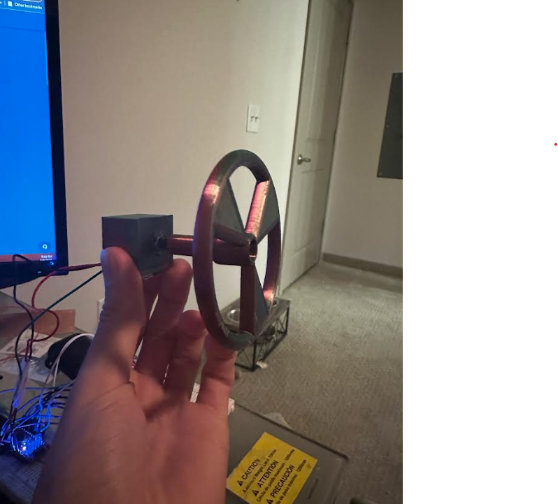
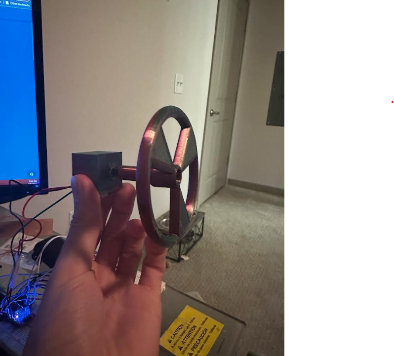

Introduction
The purpose of this project was to create some type of lowtech input with a high tech output. In essence making something that is not usually powered or interactive and give it some type of life. A few examples are touch sensing lights, books that depending on where you press turn certain leds on, a paper version of flappy bird, a whiteboard that writes the time with servo motors, the list goes on and on.
Planning
To start we had to come up with some type of lowtech input. Building off a previous uProject on touch capacitive buttons, we leaned this way on how we wanted to interact with whatever we were going to make. After some brainstorming we came up with a few ideas that were showed in class to build off such as a Theremin Device getting controlled by different things, a memory game about which LEDs light up and you pressing them in that order. The hard part with the memory game was creating some type if analog way to store the LEDs chosen and what the user may choose. You can see the ideas we came up with in the photos below, most of them show the ideas or slight changes to certain ideas and how to control them.


After coming up with some ideas and thinking about what we could do, we decided to make a lowtech piano based on touch capacitive sensors made of copper tape and paper circuits, with a few wires.
Building from the plan of a flat piano, we began to draw it out a bit. Knowing we would need a decent number of keys and a way to wire it, we planned to 3d print a base plate to lay down the keys (or strips of copper tape) in order to wire them up. This idea on paper led us to a decent first picture of what our piano would look like. This was also were we could pna some of the wiring and where we wanted the pins to go to the keys on the piano, going from left to right on the keyboard will play a lower note such that the farthest left key will play a highest pitch note and the farthest right key will play the lowest note.
You can see in this the 9 Keys we plan to use and the wiring for it. While the paper wireing looks messy, it is for us to follow and connect to the arduino and use the piezo buzzer to create the sounds we want. Pins 3-11 will be the different touch buttons while pin 2 will be the common send pin, each one will be linked with a 22 KOhm resistor. This allows us to detect each key press with the most minimal amout of wires and circuits that we would have to make.
Going further on the design we wanted to house it in some way and the best was some type of box that the piano keys ccould sit on top of and then run the wires below it into the circuit and allow us to play the sounds we want based on the key presses. This idea looks a little simplier than all those wires as shown below.

Modeling
To make the keys seem more like keys on a piano, we decided making a simple 3d model was the best choice for this. Creating a simple box with an edge and in between each key another slight edge in order to determine the difference in keys but also help to keep the copper tape we planned on using from touching one another and running into issues there. In Fusion 360 it was pretty straight forward and that wass start with a box, raise the edges and add in the dividers we would need to get. This began to takes shape as a simple sketch that looks something like this.

After extruding the pieces out we need and cutting away at the backside of the box in order to make the running of wires easier and lay flatter, we get this in fusion 360.

We can then exrude this like before and get a better look at what we have created. Going up past the piece that will slide over the pole attachment by about 10mm, we can now see what the wheel will look like once we print it out.

Printing this out along with the pole we can attach the 2. As FDM 3D printers have some tolerance issues the fit was not as perfect as we would have liked. Knowing its plastic we decided to melt down the areas the slide into one another and push the plastic in, essentially plastic welding the two together. This allows us not to worry about the 2 coming apart and strong enough it won't just pop off when you turn the wheel.

Having these 2 joined the next step was to think about how to mount the potentiometer and wheel to a table so you could turn it without having to hold the wheel in one piece and base of the potentiometer together and actually have a decent user experience. Having been into racing and racing simulators as well as owning a wheel for my computer. I decided to take the same approach as the Logitech G920 wheel as well as many other similar devices that has a similar design concept to what we had made. having a base, slight peg that extends towards the user and the sterring wheel attached to that peg. We had to design a small base that the potentiometer could side though, allowing the "peg" of the potentiometer to connect to the wheel and mount that "base" to the table. Also knwing the limtations of our 3D printer, modeling abilities and general strength of FDM printed parts, the simplest solution to the mounting of the base is just some strong double-sided adhesive. After modeling and account for the potentiometers diameter, as well as needing to solder some wire to the 3 pins of the potentiometer to allow for a decent amount space for the LED matrix and the input device we made a simple box thats open on one side with a hole of 7mm in the center of it.
Extruding this out like before and printing it out, gives us this box with an open side and 1 side with a hole in it.
Piecing it together
Adding the base, peg and Wheel together it begins to look like the G920 in a way as described previously. With this now we have a way to control the game on the matrix and move our "player" or controlled LED back and forth on the matrix. Here we can see the G920 and how it has the base and wheel connected to that base compared to ours which has the base and is connected with a rotating peg that is used to input as movement.
 

Wiring the potentiometer was easy after looking at a pinout configuration online. Soldering the ground, power and Output pin that will be wired into the 5v, ground and A5 pins on the arduino.


While the wiring is done the next trick is being able to get it to stay in place. First we tried doing what we did with the wheel and peg and plastic welding it. While this worked somewhat, the potentiometer would break off and start freely moving so that was an issue. The other option was to super glue it in place which seemed to work well enough for this with a lot of super glue.

Mounting the base is as simple as some 3M mounting squaures as they are strong enough and roughly the size of the base. Taking 2 of them and sticking it to the desk allows the enough stability to now turn the wheel and control the game as we inteded. In the photos you may see some burn spots around the potentiometer, that is the result of the failed plastic welding to it. We kind of expected it to fail but thought it was worth trying. The reason we thought it would fail compared to the peg and wheel was the fact we arent melting plastic on the potentiometer to weld to the base, but rather we are trying to "crimp" it into place with extra melted plastic filament from the 3D printer.
Making the game
Now that we have the wiring and controls figured out it was now time to put this together and program it.
Programming the game, we thought and looked at a few other examples we found online such as flappy bird, another one as we created a wheel and though of a driving game was this example . The only issue with this game was the way it was being controlled, he made it with 2 buttons to go left and right and not actually be using a wheel. Seeing another example was a space invades style game that you can see here. Noticing a potentiometer for input as well as a button, we thought of going this direction and just ditching the button and essentially making it have autofiring instead. The code is also from here so thanks to Mirko Pavleski for the example.
The code gave us a layout to map from, he did also include a buzzer to play sounds on a hit, death or win in the game but we decided not to incorportate this for now. While his design had a housing we stayed awway from that as well due to time constraints on both our ends. Programming the matrix is like an 2d array thats 8x8, we can see this from his code examples and even how he is displaying the level numbers to show a 1 such as:
#define level1_ani { \
{1, 1, 1, 0, 0, 1, 1, 1}, \
{1, 1, 0, 0, 0, 1, 1, 1}, \
{1, 1, 0, 0, 0, 1, 1, 1}, \
{1, 1, 1, 0, 0, 1, 1, 1}, \
{1, 1, 1, 0, 0, 1, 1, 1}, \
{1, 1, 1, 0, 0, 1, 1, 1}, \
{1, 1, 0, 0, 0, 0, 1, 1}, \
{1, 1, 0, 0, 0, 0, 1, 1} \
}
After figuring out the rows and columns needed all the code can be found here on Github.It's built off the previously mentioned code with some changes to the sound and way of firing.
Demo
Here is what the game running with the crafted wheel, wired matrix and code. You can see how the potentiometer/wheel is setting the postion based on how far it is turned one way. If all the way right, the player will be all the way to the right, if all the way left, the player is all the way on the left side.
Issues
After referencing the codes mentioned and creating our own. Some issues as well as things we wanted to change like making all 8 rows playable and removing the shifting of the grid ended up giving us some small issues. At first the game was not initializing the first row (row 0) of the matrix, this was due to us just not initializing it in the code and having no loop to run through that set of LEDs and actually turn them on. Another issue was that due to changing it form only being allowed to shoot and move within row 1-6 and not row 0 or row 7 gave us a few other issues. One of them being when we did allow movement to row 0, it would end up wrapping to the 7th row which was not good as going all the way left and having a pixel light up on the opposite side which should not happen. To fix this was just a simple if statement essentially stating that if the player was on the row 0. to only light up the pxiel below the player as the player is at row 1 technically and the 3 drawn pixels are on row 0, which can be seen in the demo video, and to ligjt up the pixel below the player and 1 pixel to his right.
if (potVal == -1){
playableRow[0][potVal +1] =1;
// playableRow[1][potVal ] =1;
playableRow[1][potVal +1] =1;
playableRow[1][potVal +2] =1;
}else {
playableRow[0][potVal +1] =1;
playableRow[1][potVal ] =1;
playableRow[1][potVal +1] =1;
playableRow[1][potVal +2] =1;
}
here you can see the difference in how the LEDs will be lit up if that player is all the way to the left hand side of the matrix. It just doesn't display that pixel.
Soliving the issue of it not going all the way across the matrix as well as beng driven in reverse compared to what it should do, i.e. we turned the wheel left, the player moved right'
we had to change the mapping of the input to this potVal = map(potVal, 1023, 0,-1, 6);. This allowed a movement between every column on the matrix all the way across the board and with the correct
directional input.
Unknown Bugs
After the coding and debugging was finished, the only and last issue we saw with the game was that if the bullet was being fired and you moved, the bullet tracked the postion of the player as well. This can also be seen the video. When the player fired and the bullet is moving up the matrix column, and if you moved the player from column 2 to column 4, that bullet would also go from column 2 to column 4. After multiple attempts and a few hours spent, we could not fix this issue. We are still unsure as to why, due to any messing of the bulletCol and firing functions would end up either not firing at all, firing a single bullet or not even displaying anything at all.
Conclusion
After all these steps of planning, wiring, testing,coding and playing the game, we are left with a successful design that works well for the user and can be controlled easily. Changing the matrix columns in the code for the levels can change the layout of the game levels as well and we went on these that offer enough of a challenge as well as difficulty increase as the user passes each level.In conclusion, we redesigned the classic game Space Invaders to be fun and entertaining for players while using our 3D printed wheel as input. We consider the wheel to be intuitive because players will become easily familiar corresponding the movement of the wheel to the movement of the player. In addition to adding the wheel as input, we took out the traditional button for shooting. We modified the code to allow for automated shooting and moving across the eight LEDs. These modifications allow the game to be playable and enjoyable with only the wheel as input.